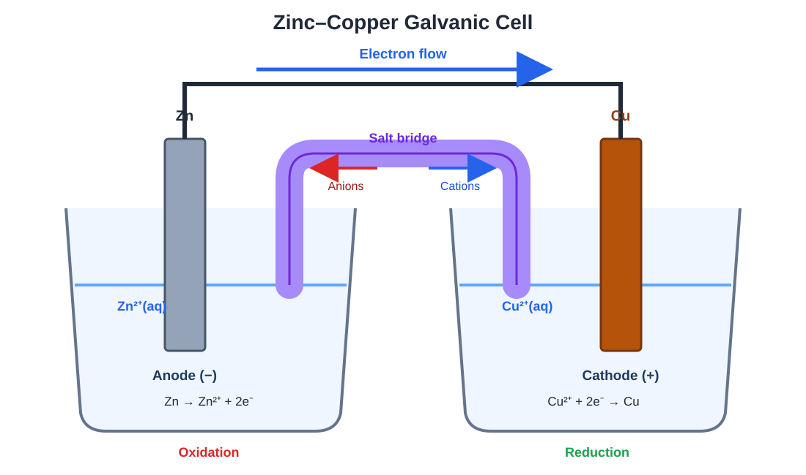

Applications of Thermodynamics
Examine entropy, spontaneity, Gibbs free energy, equilibrium, electrochemical cells, cell potential, and electrolysis.
Topics
Entropy and Spontaneity
Analyze entropy changes and determine how energy dispersal and particle arrangement influence whether a process is thermodynamically favored.
Gibbs Free Energy and Equilibrium
Use enthalpy, entropy, temperature, and equilibrium constants to determine whether reactions are thermodynamically favorable.
Electrochemistry
Explore galvanic and electrolytic cells, oxidation and reduction, cell potential, free energy, and quantitative electrolysis.
Entropy and Spontaneity
Entropy, represented by S, describes the dispersal of energy and the number of possible microscopic arrangements available to a system.
Entropy is sometimes described as disorder, but a more precise interpretation focuses on how many possible arrangements, or microstates, can produce the same observable state.
Microstates
A microstate is one possible arrangement of the particles and energy in a system. A system with more possible microstates has greater entropy.
In this relationship:
- S is entropy.
- kB is the Boltzmann constant.
- W is the number of possible microstates.

Factors That Affect Entropy
| Change | General Effect on Entropy |
|---|---|
| Solid → Liquid → Gas | Entropy increases |
| Increasing temperature | Entropy increases |
| Increasing the number of gas particles | Entropy usually increases |
| Increasing particle complexity | Entropy generally increases |
| Mixing particles | Entropy generally increases |
| Expanding a gas into a larger volume | Entropy increases |
Sgas > Sliquid > Ssolid
Predicting the Sign of ΔS
The entropy change of a reaction can often be predicted by comparing the physical states and numbers of particles on the reactant and product sides.
Example: Decreasing Entropy
The reactants contain four total moles of gas, while the products contain two moles of gas.
Because the number of gas particles decreases, ΔS is negative.
Example: Increasing Entropy
The reactant side contains only a solid, while the product side includes a gas.
The formation of gas greatly increases the number of accessible arrangements, so ΔS is positive.
Standard Molar Entropy
Standard molar entropy, S°, is the entropy of one mole of a substance under standard-state conditions. Its common units are:
Unlike standard enthalpies of formation, the standard molar entropy of an element in its standard state is not generally zero.
Each standard molar entropy must be multiplied by its coefficient in the balanced equation.
Example: Calculating Standard Entropy Change
Use these standard molar entropies:
| Substance | S° in J/(mol·K) |
|---|---|
| H2(g) | 130.7 |
| O2(g) | 205.0 |
| H2O(l) | 69.9 |
The result is negative, which is consistent with gaseous reactants forming a liquid product.
Entropy Changes During Phase Transitions
At the temperature where two phases are in equilibrium, the entropy change for a phase transition can be calculated from its enthalpy change.
Entropy of the Universe
The second law of thermodynamics describes thermodynamic favorability using the entropy change of the universe.
| Value | Meaning |
|---|---|
| ΔSuniverse > 0 | Process is thermodynamically favored |
| ΔSuniverse = 0 | System is at equilibrium |
| ΔSuniverse < 0 | Forward process is not thermodynamically favored |
Entropy Change of the Surroundings
At constant temperature and pressure, the surroundings’ entropy change is related to the system’s enthalpy change.
An exothermic process releases energy into the surroundings, increasing the surroundings’ entropy. An endothermic process removes energy from the surroundings, decreasing their entropy.
Thermodynamic Favorability Versus Reaction Rate
Thermodynamic favorability describes whether a process has a tendency to occur under the stated conditions. It does not determine how quickly the process occurs.
Kinetics determines how quickly the process occurs.
A thermodynamically favored reaction can still occur extremely slowly if it has a large activation-energy barrier.
Practice Questions
Question 1: Predicting the Sign of ΔS
Consider the reaction:
Predict whether ΔS is positive or negative and explain.
Show solution
The reactant side contains two total moles of gas. The product side contains three total moles of gas.
Increasing the number of gas particles increases the number of possible particle arrangements. Therefore, ΔS is positive.
Question 2: Ranking Entropy
Rank the following samples from lowest to highest entropy:
Show solution
Particles in a solid have relatively restricted positions. Liquid particles have more possible arrangements, while gas particles can occupy a much larger number of positions.
Question 3: Calculating Standard Entropy Change
Calculate ΔS° for:
Use the following data:
| Substance | S° in J/(mol·K) |
|---|---|
| N2(g) | 191.5 |
| H2(g) | 130.7 |
| NH3(g) | 192.8 |
Show solution
Calculate the product total:
Calculate the reactant total:
The negative result agrees with the decrease from four moles of gas to two moles of gas.
Question 4: Entropy of a Phase Transition
The molar enthalpy of fusion of water is 6.01 kJ/mol. Calculate ΔSfusion at its normal melting temperature of 273.15 K.
Show solution
Convert the enthalpy from kilojoules to joules:
The value is positive because melting increases the number of accessible particle arrangements.
Question 5: Entropy Change of the Surroundings
A reaction has ΔHsystem = −75.0 kJ/mol at 298 K. Calculate ΔSsurroundings.
Show solution
Convert the enthalpy to joules:
The surroundings gain entropy because the exothermic reaction releases energy into them.
Question 6: Entropy of the Universe
A process has:
- ΔSsystem = +120 J/(mol·K)
- ΔSsurroundings = −80 J/(mol·K)
Calculate ΔSuniverse and determine whether the process is thermodynamically favored.
Show solution
Because ΔSuniverse is positive, the process is thermodynamically favored.
Question 7: Thermodynamics Versus Kinetics
A reaction is thermodynamically favored under a particular set of conditions, but almost no product forms during a short experiment.
Explain how both observations can be true.
Show solution
Thermodynamic favorability indicates that the reaction has a tendency to proceed toward products under the stated conditions.
It does not describe the reaction rate. If the reaction has a large activation-energy barrier, it may proceed extremely slowly.
Therefore, the reaction can be thermodynamically favored but kinetically slow.
Question 8: Comparing Gas Expansion
A gas initially occupies one side of an evacuated container. A divider is removed, allowing the gas to occupy the entire container at the same temperature.
What happens to the gas’s entropy?
Show solution
The entropy increases.
In the larger volume, each gas particle has more possible positions. The system therefore has more accessible microstates, even though the number of particles and temperature remain unchanged.
Watch: Entropy and Spontaneity
Watch a worked example involving entropy predictions, standard molar entropy, or the entropy change of the universe.
Gibbs Free Energy and Equilibrium
Gibbs free energy combines enthalpy, entropy, and temperature into a single quantity that predicts whether a process is thermodynamically favored under a specified set of conditions.
Gibbs Free Energy
In this equation:
- ΔG is the Gibbs free-energy change.
- ΔH is the enthalpy change.
- T is the absolute temperature in kelvin.
- ΔS is the entropy change.
If ΔH is in kJ/mol, convert ΔS from J/(mol·K) to kJ/(mol·K).
Interpreting the Sign of ΔG
| Value of ΔG | Meaning |
|---|---|
| ΔG < 0 | Forward process is thermodynamically favored |
| ΔG = 0 | System is at equilibrium |
| ΔG > 0 | Forward process is not thermodynamically favored |
Example: Calculating ΔG
A reaction has ΔH = −85.0 kJ/mol and ΔS = −150 J/(mol·K). Calculate ΔG at 298 K.
Convert ΔS to kilojoules:
Because ΔG is negative, the forward reaction is thermodynamically favored at 298 K.
Temperature Dependence
Whether a reaction is thermodynamically favored can depend on the signs of ΔH and ΔS and on the temperature.
| Sign of ΔH | Sign of ΔS | Temperature Dependence |
|---|---|---|
| Negative | Positive | Favored at all temperatures |
| Positive | Negative | Not favored at any temperature |
| Negative | Negative | Favored at lower temperatures |
| Positive | Positive | Favored at higher temperatures |
Finding the Transition Temperature
The temperature at which a process changes between favored and not favored occurs when ΔG = 0.
Example: Temperature Threshold
A process has ΔH = +50.0 kJ/mol and ΔS = +120 J/(mol·K). Calculate the temperature at which ΔG = 0.
Convert ΔS to kilojoules:
Because both ΔH and ΔS are positive, the process is favored at temperatures above 417 K.
Standard Free Energy and Equilibrium
The standard free-energy change, ΔG°, is related to the equilibrium constant.
In this equation:
- R = 8.314 J/(mol·K)
- T is measured in kelvin
- K is the equilibrium constant
| ΔG° | K | Equilibrium Position |
|---|---|---|
| Negative | K > 1 | Products favored |
| Zero | K = 1 | Neither side strongly favored |
| Positive | K < 1 | Reactants favored |
Example: Finding K from ΔG°
A reaction has ΔG° = −10.0 kJ/mol at 298 K. Calculate K.
Convert ΔG° to joules:
Because K is greater than 1, products are favored under standard-state equilibrium conditions.
Free Energy under Nonstandard Conditions
The actual free-energy change depends on the current composition of the reaction mixture.
Q is the reaction quotient calculated using the current concentrations or partial pressures.
| Comparison | Sign of ΔG | Favored Direction |
|---|---|---|
| Q < K | Negative | Toward products |
| Q = K | Zero | At equilibrium |
| Q > K | Positive | Toward reactants |
ΔG describes the current conditions.
A reaction with positive ΔG° can still proceed toward products under nonstandard conditions if Q is sufficiently small.
Free Energy at Equilibrium
At equilibrium:
The forward and reverse reactions continue, but neither direction has a net thermodynamic driving force.
Coupled Reactions
A thermodynamically unfavorable reaction can be combined with a sufficiently favorable reaction so that the overall process has a negative ΔG.
Example: Reaction Coupling
One reaction has ΔG = +35 kJ/mol. It is coupled to a second reaction with ΔG = −50 kJ/mol.
The combined process is thermodynamically favored because its overall ΔG is negative.
Manipulating Free-Energy Changes
Free-energy changes are manipulated in the same way as reaction enthalpies and equilibrium constants.
| Change to Reaction | Change to ΔG° |
|---|---|
| Reverse the reaction | Reverse the sign of ΔG° |
| Multiply the equation by a factor | Multiply ΔG° by the same factor |
| Add reactions | Add their ΔG° values |
Thermodynamic and Kinetic Control
A product can form more quickly because its pathway has a lower activation energy, while a different product may be more thermodynamically stable.
The thermodynamic product has the lower final free energy.
Reaction rate and thermodynamic favorability answer different questions.
Practice Questions
Question 1: Calculating ΔG
A reaction has ΔH = +42.0 kJ/mol and ΔS = +180 J/(mol·K). Calculate ΔG at 298 K and determine whether the reaction is thermodynamically favored.
Show solution
Convert ΔS to kilojoules:
Because ΔG is negative, the reaction is thermodynamically favored at 298 K.
Question 2: Predicting Temperature Dependence
A reaction has a negative ΔH and a negative ΔS. At what general range of temperatures is the reaction most likely to be thermodynamically favored?
Show solution
The negative ΔH favors a negative ΔG. Because ΔS is negative, the term −TΔS is positive and opposes thermodynamic favorability.
At lower temperatures, the positive −TΔS term is smaller. Therefore, the reaction is most likely favored at lower temperatures.
Question 3: Finding a Temperature Threshold
A reaction has ΔH = −60.0 kJ/mol and ΔS = −150 J/(mol·K).
Calculate the temperature at which ΔG = 0 and state whether the reaction is favored above or below that temperature.
Show solution
Convert ΔS to kilojoules:
Because both ΔH and ΔS are negative, the reaction is favored at temperatures below 400 K.
Question 4: Finding K from ΔG°
A reaction has ΔG° = +12.0 kJ/mol at 298 K. Calculate K. Use R = 8.314 J/(mol·K).
Show solution
Convert ΔG° to joules:
K is less than 1, which is consistent with the positive ΔG° and a reactant-favored equilibrium.
Question 5: Finding ΔG° from K
A reaction has K = 2.5 × 104 at 298 K. Calculate ΔG°. Use R = 8.314 J/(mol·K).
Show solution
The negative value agrees with the large equilibrium constant and product-favored equilibrium.
Question 6: Nonstandard Conditions
A reaction has ΔG° = +5.00 kJ/mol at 298 K. The current reaction quotient is Q = 0.0100.
Calculate ΔG and determine the favored direction. Use R = 8.314 J/(mol·K).
Show solution
Convert ΔG° to joules:
Under the current nonstandard conditions, ΔG is negative, so the reaction proceeds toward products.
Question 7: Reaction Coupling
Reaction 1 has ΔG = +28 kJ/mol. Reaction 2 has ΔG = −45 kJ/mol. The two reactions are coupled.
Calculate the overall ΔG and determine whether the combined process is thermodynamically favored.
Show solution
The combined process is thermodynamically favored because its overall ΔG is negative.
Question 8: Manipulating ΔG°
The following reaction has ΔG° = −18.0 kJ:
Determine ΔG° for:
Show solution
First reverse the original reaction. Reversing it changes the sign of ΔG°.
Then multiply the reversed equation by two.
Question 9: Standard Versus Current Conditions
A reaction has a positive ΔG° but a negative ΔG under the current conditions. Explain why this is possible.
Show solution
ΔG° applies to standard-state conditions, while ΔG depends on the current reaction quotient.
If Q is sufficiently small, the RT ln(Q) term is negative enough to make the actual ΔG negative. The reaction can therefore proceed toward products even though it is not product-favored under standard conditions.
Watch: Gibbs Free Energy
Watch a worked example involving ΔG, temperature, equilibrium constants, nonstandard conditions, or coupled reactions.
Electrochemistry
Electrochemistry examines the relationship between oxidation– reduction reactions and electrical energy. Electrochemical cells separate oxidation and reduction into two half-reactions.
Oxidation and Reduction
Reduction: Gain of electrons
Oxidation and reduction always occur together because electrons lost by one substance must be gained by another.
Anodes and Cathodes
Cathode: Reduction occurs
These definitions remain true for both galvanic and electrolytic cells.
Galvanic Cells
A galvanic cell, also called a voltaic cell, uses a thermodynamically favored redox reaction to produce electrical energy.

The Zinc–Copper Cell
At the zinc anode, oxidation occurs:
At the copper cathode, reduction occurs:
The overall cell reaction is:
• Electrons flow from Zn to Cu
• The zinc electrode loses mass
• The copper electrode gains mass
• [Zn2+] increases
• [Cu2+] decreases
Electron Flow and Conventional Current
Electrons travel through the external circuit from the anode to the cathode.
Conventional current is defined in the direction opposite to electron flow.
The Salt Bridge
The salt bridge completes the electrical circuit and prevents charge from building up in either half-cell.
At the anode, oxidation produces positive ions. Anions from the salt bridge migrate toward the anode compartment.
At the cathode, positive ions are consumed. Cations from the salt bridge migrate toward the cathode compartment.
Salt-bridge cations migrate toward the cathode.
Electrons do not travel through the salt bridge.
Cell Notation
Cell notation provides a compact representation of an electrochemical cell.
The anode is written on the left and the cathode on the right. A single vertical line represents a phase boundary, while the double line represents the salt bridge.
Standard Reduction Potentials
Standard reduction potentials measure the tendency of species to gain electrons under standard-state conditions.
Standard cell potential is calculated using:
Both values are taken from a standard reduction-potential table. The anode value is subtracted because the listed half-reaction is being reversed to represent oxidation.
Example: Standard Cell Potential
Use the following reduction potentials:
Copper has the more positive reduction potential, so it is reduced at the cathode. Zinc is oxidized at the anode.
The positive cell potential indicates that the cell reaction is thermodynamically favored under standard-state conditions.
Cell Potential and Free Energy
In this equation:
- n is the number of moles of electrons transferred.
- F is Faraday’s constant: 96,485 C/mol e−.
- E°cell is measured in volts.
| E°cell | ΔG° | Meaning |
|---|---|---|
| Positive | Negative | Forward reaction is thermodynamically favored |
| Zero | Zero | System is at equilibrium |
| Negative | Positive | Forward reaction is not thermodynamically favored |
Cell Potential and the Equilibrium Constant
A positive standard cell potential corresponds to K greater than 1 for the written cell reaction.
Nonstandard Cell Potentials
Cell potential changes when ion concentrations or gas pressures differ from standard-state conditions.
At 25°C, this can be written as:
This is the Nernst equation. As the cell operates and approaches equilibrium, Q approaches K and the cell potential approaches zero.
Galvanic and Electrolytic Cells
| Property | Galvanic Cell | Electrolytic Cell |
|---|---|---|
| Reaction | Thermodynamically favored | Driven by external electrical energy |
| Ecell | Positive for written reaction | Negative without external energy |
| ΔG | Negative | Positive for the driven reaction |
| Anode sign | Negative | Positive |
| Cathode sign | Positive | Negative |
| Oxidation location | Anode | Anode |
| Reduction location | Cathode | Cathode |
Quantitative Electrolysis
The amount of substance produced during electrolysis depends on the total electrical charge transferred.
Example: Mass Deposited during Electrolysis
A current of 2.00 A transfers charge for 1930 seconds through a system in which:
Calculate the mass of copper produced.
Two moles of electrons produce one mole of copper: